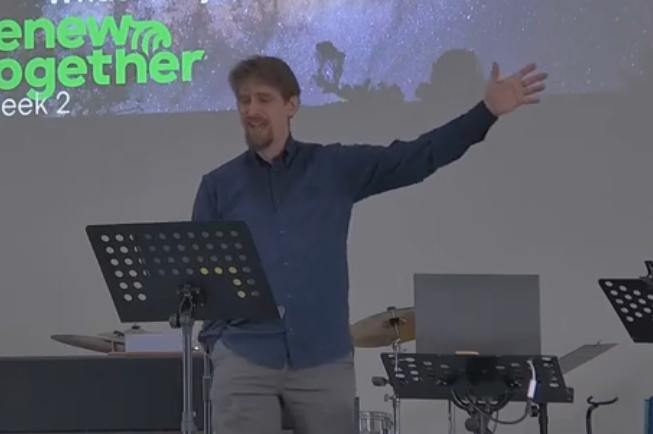

Sermons

Weekly Messages
Listen to our inspiring sermons and teachings that help you grow in faith and understanding. Our pastors share biblical wisdom and practical guidance for daily living.
Visit Our YouTube Channel